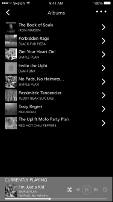
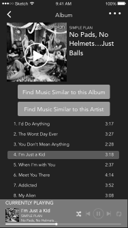
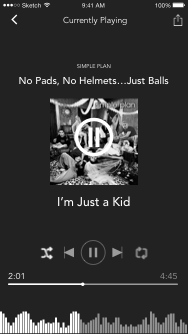
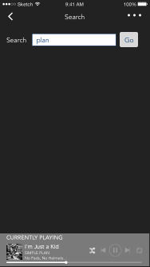
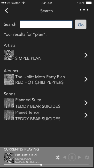
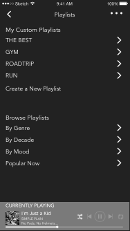
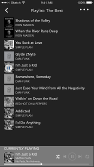
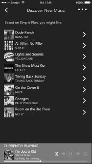

While working and playing, we like to listen to music from our mobile devices and computers. BlocJams is a replica of Spotify which allows users to stream music from its album library.
BlocJams allows users to scroll through the library's album listings. The user can select an album to view a list of its tracks and play its music. Users have the ability to play, pause, and skip songs. My role in this project was to create wireframes for 8 different views.
wireframes for mobile version
Previous
*
*
*
*
*
*
*
*
Next

Albums - list of all available albums
×

Album - Links to discover similar music and its list of songs
×

Currently Playing - the current song
×

Search - by keyword for artist name, album name, or song title
×

Search - results show artists, albums, and songs
×

Playlists - list containing the user's custom playlists plus system playlists
×

Playlist - view a particular playlist
×

Discover New Music - based on a particular artist
×
After creating multiple wireframes, I followed step-by-step instructions to develop desktop versions of the Albums page, Album page, and a landing page. I used the instructions to learn how to write JavaScript and jQuery code, then I reworked the jQuery into AngularJS for those pages while implementing a new organization system for the development files.
The user stories I was given for the AngularJS development phase provide the individual steps to accomplish this project.
Bootstrap AngularJS to my original version of BlocJams.
Configure routing and states.
Implement controllers for each view.
Create a service to handle song playback.
Write a directive to control song position and volume sliders.
Add a time code filter to display time in minutes and seconds.
Solution
I used UI Router to display the slide bar so that I could reference it twice in the music player function bar without repeating code. I created a controller for each of the three main views of this project to hold functions for each page. In order to play the music correctly using Buzz Library, the song length needed to be saved in total number of seconds rather than m:ss format. To account for this I created a filter that would receive the total number of seconds and format it in the m:ss format for better display.
JavaScript for time code filter
×
In addition to completing the user stories I also added functionality to allow the user to mute the volume.
Conclusion
The development MVP of this project was successful. In its current form it is very limited. Future development for this project will be to develop the additional wireframes to include user accounts, user preferences, custom playlists, ratings, and to search the music library for a certain artist, album, or song.